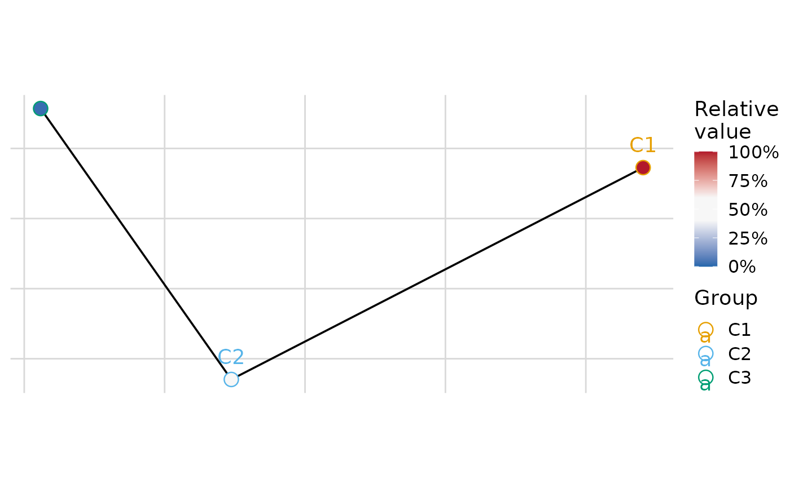
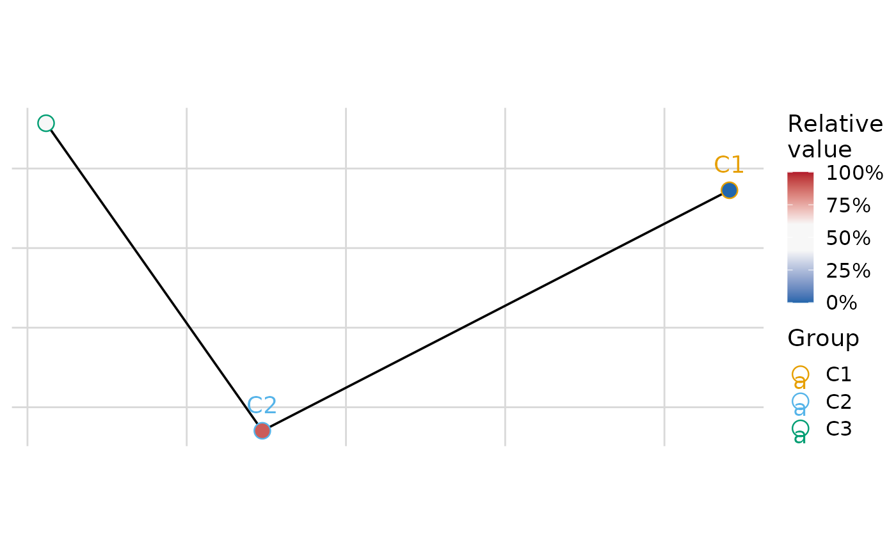
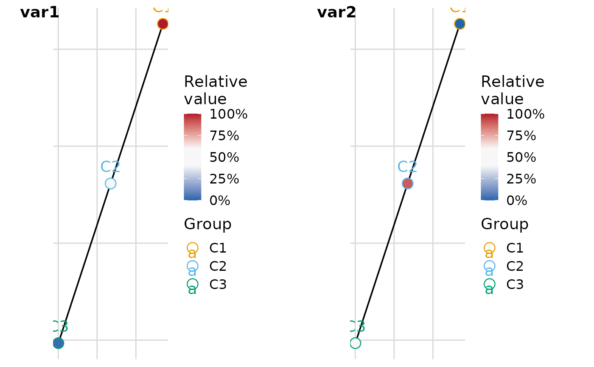

Plot minimum-spanning tree of groups with per-variable node colouring
Source:R/plot_cluster_mst.R
plot_group_mst.RdComputes the minimum-spanning tree (MST) over groups, where the distance
between two groups is the Euclidean distance between their median variable
profiles. The MST is built from the full pairwise Euclidean distance matrix
(i.e. a fully connected undirected weighted graph), matching the approach
used by FlowSOM (BuildMST). The node layout is determined once and shared
across all per-variable plots.
Two layout algorithms are supported via layout_algorithm:
"kamada-kawai"(default): uses the Kamada-Kawai force-directed algorithm (igraph::layout_with_kk) on the MST graph, matching the FlowSOM visualisation style."mds": uses classical multidimensional scaling (stats::cmdscale) of the full Euclidean distance matrix.
For each variable, a separate plot is produced in which each group node
is filled according to the ECDF-standardised percentile of that
group's median value for the variable — the same scaling used by
plot_group_heatmap(). The node border and label colour encode group
identity and can be overridden via col_clusters.
By default the function returns a named list of ggplot2 objects, one
per variable. If n_col or n_row is supplied the plots are combined into
a single figure using cowplot::plot_grid, with variable names as labels.
Colour palette
When col_clusters is NULL, group colours are assigned automatically
based on palette_group. The "auto" strategy selects a palette by the
number of groups:
1–8 groups: Okabe-Ito — colorblind-safe 8-colour palette.
9–12 groups: ColorBrewer Paired — 12 colours pairing light and dark versions of 6 hues.
13–21 groups: Kelly's palette (optional
Polychromepackage) — 21 colours of maximum perceptual contrast (white excluded). Falls back tohue_pal()with a warning ifPolychromeis not installed.22–31 groups: Glasbey's palette (optional
Polychromepackage) — 31 algorithmically spaced colours (white excluded). Falls back tohue_pal()with a warning ifPolychromeis not installed.> 31 groups:
hue_pal()— evenly spaced hues (a warning is issued).
Set palette_group explicitly to override the automatic selection (provided
the chosen palette supports at least as many colours as there are groups).
Node fill
By default (node_fill_by = "variable") each variable produces a separate
plot in which node fill encodes the ECDF-standardised percentile of that
cluster's median — a continuous gradient from low (blue) to high (red) using
the palette controlled by palette / col / col_positions.
Set node_fill_by = "cluster" to instead fill nodes by cluster identity
using the same discrete palette chosen by palette_group / col_clusters.
In this mode the function returns a single ggplot2 object (not a list)
because the fill is the same regardless of variable.
Usage
plot_group_mst(
.data,
group,
vars = NULL,
layout_algorithm = c("kamada-kawai", "mds"),
coord_equal = TRUE,
suppress_axes = NULL,
col_clusters = NULL,
node_fill_by = "variable",
palette_group = "auto",
palette = "bipolar",
col = c("#2166AC", "#F7F7F7", "#B2182B"),
col_positions = "auto",
white_range = c(0.4, 0.6),
na_rm = TRUE,
n_col = NULL,
n_row = NULL,
label_x = 0,
label_y = 1,
hjust = -0.5,
vjust = 1.5,
font_size = 14,
thm = cowplot::theme_cowplot(font_size = font_size) + ggplot2::theme(plot.background =
ggplot2::element_rect(fill = "white", colour = NA), panel.background =
ggplot2::element_rect(fill = "white", colour = NA)),
grid = cowplot::background_grid(major = "xy")
)
plot_cluster_mst(
.data,
cluster,
palette_cluster = "auto",
palette = "bipolar",
...
)Arguments
- .data
data.frame. Rows are observations. Must contain a column identifying group membership and columns for variable values.
- group
character. Name of the column in
.datathat identifies group membership.- vars
character vector or
NULL. Names of columns in.datato use as variables. IfNULL, all columns exceptgroupare used. Default isNULL.- layout_algorithm
character. Layout algorithm for positioning nodes. One of
"kamada-kawai"(default) or"mds"."kamada-kawai"uses the Kamada-Kawai force-directed algorithm on the MST graph viaigraph::layout_with_kk, matching the FlowSOM visualisation style."mds"uses classical multidimensional scaling of the full distance matrix viastats::cmdscale.- coord_equal
logical. Whether to enforce equal visual scaling on both axes (one unit on the x-axis equals one unit on the y-axis) via
ggplot2::coord_equal(). Default isTRUE.- suppress_axes
logical or
NULL. Whether to suppress axis text, ticks, lines, and titles. WhenNULL(default), the value is inherited fromcoord_equal— axes are suppressed when equal scaling is active.- col_clusters
named character vector or
NULL. Per-cluster colours applied to node borders and text labels. Names should match cluster labels. WhenNULL(default), colours are chosen automatically by number of groups: Okabe-Ito for up to 8, ColorBrewer Paired for up to 12, Kelly's palette (requiresPolychrome) for up to 21, Glasbey's palette (requiresPolychrome) for up to 31, andhue_pal()for larger numbers.- node_fill_by
character. Controls what the node fill encodes. One of
"variable"(default) or"cluster". See the Node fill section of Details.- palette_group
character. Palette used for automatic colour assignment when
col_clustersisNULL. One of"auto"(default),"okabe_ito","paired","kelly","glasbey", or"hue_pal". See the Colour palette section of Details.- palette
character or
NULL. Named colour palette for the continuous node fill scale. Forwarded toplot_group_mst(). Default is"bipolar".- col
character vector. Colours used to fill nodes, ordered from low to high values. Default is
c("#2166AC", "#F7F7F7", "#B2182B")(blue, white, red). Any number of colours (>= 2) is accepted. Ignored whenpaletteis notNULL.- col_positions
numeric vector or
"auto". Positions (in [0, 1]) at which each colour incolis placed on the fill scale. Must be the same length ascol, sorted in ascending order, with the first value0and the last value1. When"auto"(default) andcolhas exactly three colours, the middle colour is stretched overwhite_range. In all other"auto"cases the colours are evenly spaced from 0 to 1. Ignored whenpaletteis notNULL.- white_range
numeric vector of length 2. The range of positions (on a 0-1 scale) over which the middle colour is stretched. Only used when
colhas exactly three colours andcol_positions = "auto". Also applied to divergingpalettepresets. Default isc(0.4, 0.6).- na_rm
logical. Whether to remove
NAvalues before computing per-cluster medians and ECDF percentiles. WhenTRUE(default),NAvalues are removed and a message is issued showing how many were removed per variable. WhenFALSE,NAvalues are passed through: node fill values will beNA(rendered as grey by default) where a variable has no non-missing observations in a cluster.- n_col
integer or
NULL. Number of columns passed tocowplot::plot_grid. If supplied (or ifn_rowis supplied) a single combined figure is returned instead of a list. Default isNULL.- n_row
integer or
NULL. Number of rows passed tocowplot::plot_grid. If supplied (or ifn_colis supplied) a single combined figure is returned instead of a list. Default isNULL.- label_x
numeric. x position of the plot labels within each panel in grid mode. Passed to
cowplot::plot_grid. Default is0.- label_y
numeric. y position of the plot labels within each panel in grid mode. Passed to
cowplot::plot_grid. Default is1.- hjust
numeric. Horizontal justification of the plot labels in grid mode. Passed to
cowplot::plot_grid. Default is-0.5.- vjust
numeric. Vertical justification of the plot labels in grid mode. Passed to
cowplot::plot_grid. Default is1.5.- font_size
numeric. Font size passed to
cowplot::theme_cowplot. Default is14.- thm
ggplot2 theme object or
NULL. Default iscowplot::theme_cowplot(font_size = font_size)with a white plot background. Set toNULLto apply no theme adjustment.- grid
ggplot2 panel grid or
NULL. Default iscowplot::background_grid(major = "xy"). Set toNULLfor no grid.- cluster
character. Name of the column in
.datathat identifies group membership. Alias for thegroupparameter.- palette_cluster
character. Alias for
palette_groupinplot_group_mst(). See the Colour palette section of Details.- ...
Additional arguments passed to
plot_group_mst().
Value
A named list of ggplot2 objects (one per variable) when neither
n_col nor n_row is specified. A cowplot::plot_grid figure when
n_col or n_row is specified.
Examples
set.seed(1)
.data <- data.frame(
group = rep(paste0("C", 1:3), each = 20),
var1 = c(rnorm(20, 2), rnorm(20, 0), rnorm(20, -2)),
var2 = c(rnorm(20, -1), rnorm(20, 1), rnorm(20, 0))
)
# Default: Kamada-Kawai layout, returns a named list of plots
plot_list <- plot_group_mst(.data, group = "group")
# MDS layout
plot_group_mst(.data, group = "group", layout_algorithm = "mds")
#> $var1

#>
#> $var2

#>
# Combined grid with 2 columns
plot_group_mst(.data, group = "group", n_col = 2)
